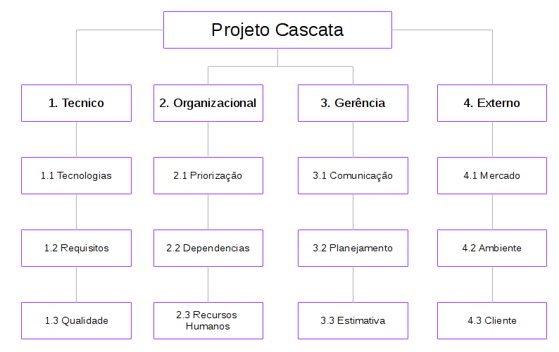

Gerenciamento de Riscos
| Data | Versão | Descrição | Autor(es) |
|---|---|---|---|
| 02/04/2018 | 0.1 | Abertuda do Documento, Introdução, Estrutura de Riscos, Identificando os Riscos, Controle de Risco | Bernardo Henrique |
1. Introdução
Este artefato tem como objetivos identificar os riscos durante o andamento do Projeto Cascata. Estes serão apresentados, a análise ocorrerá de forma qualitativa e quantitativa, apresentando as causas, soluções e grau de impacto. Com estas análises, buscará mitigar os impactos destes riscos no projeto.
2. Estrutura de Riscos
Os riscos de um projeto pode ser separados em quatros grandes áreas, abaixo pode-se observar a EAR do projeto.

2.1 Técnico
- Tecnologias: Referente às tecnologias e ferramentas utilizadas no projeto, como dificuldade de aprendizado da tecnologia.
- Requisitos: Referente aos requisitos do projeto, como levantamento errôneo dos requisitos.
- Qualidade: Refente à qualidade do produto, como usabilidade.
2.2 Organizacional
- Priorização: Referente à possibilidade de erros caso a priorização dos módulos do projeto não seja feita de forma correta.
- Dependencias: Referente à possibilidade de erros caso a dependencia entre os módulos não seja feita de forma correta.
- Recursos Humanos: Referente à mau gestão dos integrantes do projeto.
2.3 Gerência de Projetos
- Comunicação: Referente à falha de comunicação da equipe.
- Planejamento: Referente às falhas de planejamento do projeto.
- Estimativa: Referente à má estimativa da capacidade de trabalho da equipe.
2.4 Externo
- Mercado: Referente às condições do mercado em que o produto está inserido.
- Ambiente: Referente ao ambiente que em qual o projeto está inserido, neste caso o acadêmico.
- Cliente: Refere-se aos riscos relacionados ao cliente, como aprovação do produto.
3. Análise Quantitavas e Qualitativas
A análise quantitativa de riscos será feita em três passos: primeiramente analisará a probabilidade de acontecimento. Depois será analisado o impacto que este risco poderá trazer ao projeto. Assim, para definir-se a prioridade com que o risco deverá ser tratado, será feita uma matriz traçando sua probabilidade e impacto, gerando em uma pontuação para cadas risco.
3.1 Probabilidade
| Probabilidade | Porcentagem | Peso |
|---|---|---|
| Muita baixa | 0 - 20 | 1 |
| Baixa | 21 -40 | 2 |
| Média | 41-60 | 3 |
| Alta | 61-80 | 4 |
| Muito Alta | 81-100 | 5 |
3.2 Impacto
| Probabilidade | Impacto | Peso |
|---|---|---|
| Muita baixo | Inexpressivo | 1 |
| Baixo | Pouco | 2 |
| Médio | Considerável | 3 |
| Alto | Grande | 4 |
| Muito Alto | Inviabiliza o Projeto | 5 |
3.3 Prioridade
A tabela abaixo representa a pontuação de um risco, a qual definirá sua prioridade:
| Prob./Imp. | Muito Baixo | Baixo | Médio | Alto | Muito Alto |
|---|---|---|---|---|---|
| Baixa | 1 | 2 | 3 | 4 | 5 |
| Muito Baixa | 2 | 4 | 6 | 8 | 10 |
| Média | 3 | 6 | 9 | 12 | 15 |
| Alta | 4 | 8 | 12 | 16 | 20 |
| Muito Alta | 5 | 10 | 15 | 20 | 25 |
A prioridade será definida em três níveis: Alta, Média e Baixa, de acordo com as pontuações e na seguinta estrutura:
| Prioridade | Pontuação |
|---|---|
| Baixa | 1-5 |
| Média | 6-14 |
| Alta | 15-25 |
4. Identificando os Riscos
4.1 Riscos Técnicos
| ID | Risco | Possibilidade | Impacto | Monitoramento | Prioridade |
|---|---|---|---|---|---|
| R01 | Dificuldade de aprendizado da tecnologia | Baixa (2) | Médio (3) | Pareamento | Média |
| R02 | Dificuldade elicitar requisitos | Média (3) | Alto (4) | Aplicação de tecnicas de elicitação, prototipação e contato constante com o cliente | Média |
| R03 | Mudança de Escopo | Médio (3) | Alto (4) | Contato com o cliente | Média |
| R04 | Interface com baixa qualidade | Muito Baixa (1) | Médio (2) | Prototipação | Baixa |
4.2 Riscos Organizacionais
| ID | Risco | Possibilidade | Impacto | Monitoramento | Prioridade |
|---|---|---|---|---|---|
| R05 | Desistência de membros da equipe | Média (3) | Muito Alto (4) | - | Alta |
| R06 | Dependência de Tarefas | Muito Alta (5) | Médio (3) | Reuniões de Equipe | Alta |
| R07 | Priorização Errônea | Baixa (1) | Médio (3) | Reuniões de Equipe | Baixa |
| R08 | Falha de Comunicação entre a Equipe | Média (3) | Médio (3) | Daily Meetings | Média |
4.3 Riscos de Gerência de Projeto
| ID | Risco | Possibilidade | Impacto | Monitoramento | Prioridade |
|---|---|---|---|---|---|
| R09 | Falha no planejamento | Média (3) | Alto (4) | Cronograma | Média |
| R10 | Mudança no Plano de Ensino da Matéria | Muito Baixa (1) | Médio (3) | Moodle | Baixa |
| R11 | Estimar esforço de forma errônea | Média (3) | Médio (3) | Brundown da Equipe | Média |
| R12 | Atraso na Entrega | Baixa (2) | Alto (4) | Cronograma | Média |
4.3 Riscos de Gerência de Projeto
| ID | Risco | Possibilidade | Impacto | Monitoramento | Prioridade |
|---|---|---|---|---|---|
| R13 | Greve da UNB | Média (3) | Muito Alto (5) | - | Alta |
| R14 | Finalização do Projeto Cascata | Muito Baixa (1) | Muito Alto (5) | Reunições com o cliente | Média |
5. Controle dos Riscos
"Controlar os riscos é o processo de implementação de planos de respostas, acompanhamento dos riscos identificados, monitoramento dos riscos residuais, identificação de novos riscos e avaliação da eficácia do processo de riscos durante todo o projeto. Durante o projeto, o riscos se encontrarão sob constante reavaliação e para a realização de um controle efetivo, a equipe estará sujeita a reuniões periódicas, execução do plano de comunicação, do plano de qualidade, monitoramento do EVM, entre outros." PMBOK, 2013.
Desta forma, a equipe estará sempre a par do andamento do projeto, da motivação dos seus integrantes, das necessidades do clientes e vários outros fatores que possam afetar o andamento do projeto.
Referências
PMI. Um guia do conhecimento em gerenciamento de projetos. Guia PMBOK 5a. ed. - EUA: Project Management Institute, 2013.